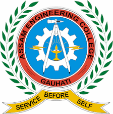

Prime Minister's Research Fellow || Doctoral Scholar
Department of Civil Engineering Institute of Technology
(IIT)
Guwahati Guwahati, Assam-781039, INDIA.
Email: s.sanchit@iitg.ac.in
Phone: +91 7983563381, +91 8054727723
Courses completed during PhD
Course Name
Credit
Grade
Advance Concrete Technology
6.00
AB
Advance Structure Design
6.00
AA
Bridge Design and Analysis
6.00
AA
Structure Dynamics
6.00
AA
Finite Element Methods
6.00
AA
Continuum Mechanics
6.00
AB
Numerical Methods
6.00
BC
Cumulative Performance Index (C.P.I.) = 9.29
Courses taught under PMRF scheme

B.Tech - Fourth Year
Construction Engineering and Management
(Department of Civil Engineering, Assam Engineering College, Assam)
My Research
Design and Development of Sustainable CBRN Protected Nuclear Power Plant’s Structure
Design and Development of a radiation leak proof nuclear containment structure which has high strength,
is ductile and absorbs high energy in case of any possible accident or threat keeping in mind the
sustainability and cost effectiveness for strengthening the development of such more power plants ahead
in time with safety, feasibility and reduction in the carbon footprint of the facility.
OBJECTIVES OF THE WORK
Designing a cost effective and sustainable radiation leak proof containment structure with high
strength and stability.
Validating the designed prototypes against the extent of radiation absorption using available
softwares.
Developing of the selected prototype and testing of the prototypes to check the design for safety
and strength using the BHISM (Blast and heavy impact simulation mechanism) equipment and the shock
tube available in IIT Guwahati.
Numerically studying the behaviour of the composite developed and developing predictive models with
the help of machine learning tools.